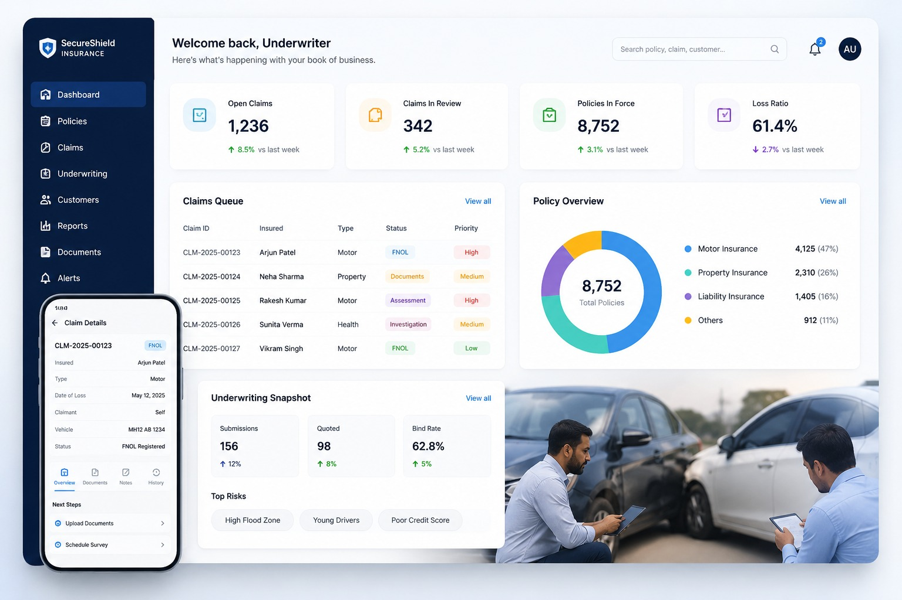

Build Smarter. Apply AI across software engineering and digital product development to accelerate delivery, improve developer productivity, and enable innovation.
Enterprise Technology. AI-Ready.
Technumen helps enterprises build, modernize and scale technology with AI, data and engineering at the core. Since 2012, we have partnered with enterprises to solve complex technology challenges across digital engineering, data, cloud, quality engineering, cybersecurity and insurance.
AI Systems
Data Intelligence
Digital Engineering
Automation
Trusted by teams building technology at global scale.
Deep enterprise experience. Strong engineering. Long-term partnerships.
Proof
Experience That You Can Build On.
1,500+Global Technical Experts
10+Years of Deep Domain Expertise
98%Client Retention Rate
3Global Delivery Centers
120+Platforms & Projects Delivered
Our Approach
AI-Ready by Design.
AI is reshaping how enterprises build, operate, modernize, and grow. At Technumen, AI is not a standalone service layered onto traditional IT. We embed AI across the technology lifecycle — from engineering and modernization to data, quality, security, and operations — helping enterprises move faster, operate smarter, and create greater business value.
Modernize Faster. Leverage AI to simplify and accelerate the modernization of complex applications, platforms, and technology environments.
Turn Data Into Intelligence. Build the data foundations, platforms, and intelligent systems that enable enterprises to scale AI and turn data into actionable insights.
Improve Quality. Use AI-powered testing, evaluation, and automation to improve quality across both traditional and AI-enabled applications.
Operate Smarter. Apply AI to technology operations to improve observability, automate routine activities, identify issues earlier, and enhance platform reliability.
Three Pillars of Impact
AI Is the Strategy, Not a Feature
Every engagement starts with the same question: where can intelligent automation change the economics of what you're building? We combine strategic AI thinking with data-driven architecture and flawless digital delivery — AI isn't a bolt-on service line here, it's the lens everything else runs through.

AI
Intelligence & thinking
From machine learning pipelines to production-grade LLM integrations, we design AI systems that reason, adapt, and improve — built for enterprise scale, not demo-day.

Data
Data & enablement
Modern data platforms, real-time analytics, and governance frameworks that turn raw data into strategic assets your teams can act on with confidence.

Digital
Digital & execution
Cloud-native development, DevSecOps, and platform engineering that ship at the velocity and security regulated enterprises actually require.
Capabilities
Technology Services. AI-Ready by Design.
Digital Engineering. Build and modernize digital products, applications and platforms with AI-enabled engineering.
Data & AI. Build trusted data foundations and intelligent solutions that turn enterprise data into business value.
Cloud & Platform Engineering. Modernize technology foundations for cloud, AI and enterprise scale.
Quality Engineering. Deliver quality across the software lifecycle — from traditional applications to AI-powered products.
Cybersecurity. Protect applications, infrastructure, identities and data across modern enterprise environments.
Insurance & Guidewire. Combine deep P&C insurance expertise with Guidewire, modern engineering and AI.
What We Do
End-to-end digital engineering services
From strategy to implementation, our service lines cover every dimension of the modern enterprise technology stack.

AI & Machine Learning
Generative AI, predictive analytics, and production MLOps infrastructure — built to move from pilot to platform without the usual 18-month stall.

Cloud & Platform Engineering
Multi-cloud migration, Kubernetes orchestration, and SRE practices that make "resilient infrastructure" a measurable SLA, not a marketing phrase.

Cybersecurity & Compliance
Zero-trust architecture and continuous compliance monitoring built for industries where a breach isn't just downtime — it's a regulatory event.

Data Engineering & Analytics
Modern data mesh and lakehouse architectures that turn scattered enterprise data into a single source of truth your AI models can actually trust.
AI
AI Isn’t a Separate Service. It’s How We Engineer.
AI is becoming an integral part of every modern technology stack. We are embedding AI across our capabilities — from software engineering and data to cloud, cybersecurity, quality engineering and industry solutions — to help organizations build smarter, faster, and more scalable solutions.
AI Engineering. Design, build and integrate intelligent applications, solutions and workflows.
AI-Ready Data. Build trusted, connected and governed data foundations that power analytics and AI.
AI Quality Engineering. Test, validate and continuously evaluate AI-powered applications and experiences.
AI-Enabled Engineering. Leverage AI to accelerate software development, modernization, automation, and productivity.
AI for Enterprise. Identify high-value AI opportunities and turn them into measurable business outcomes.
Quality
Quality Engineering for the AI Era.
AI is redefining what quality means. Technumen combines deep quality engineering expertise with AI-powered testing, intelligent automation, AI/ML evaluation, and human evaluation to help enterprises build technology that is reliable, resilient, and trusted.
AI Application Testing. Validate AI-enabled applications for functionality, reliability, performance, and real-world outcomes.
AI/ML Evaluation. Evaluate AI/ML systems for accuracy, consistency, robustness, and overall model performance.
Human Evaluation. Bring human expertise into the evaluation of AI outputs to assess relevance, quality, context, and user experience.
Intelligent Test Automation. Leverage AI-driven automation to accelerate test coverage, improve efficiency, and enable continuous quality.
Enterprise Experience
Built for Complex Technology. Proven at Scale.
We bring deep experience across complex enterprise environments where technology must be secure, scalable, resilient, and built for business impact.
Google & YouTube. Deep engineering, product, and quality expertise supporting some of the world’s most widely used digital platforms and high-scale technology ecosystems.
Insurance. Deep P&C insurance and Guidewire expertise across core transformation, digital experiences, data and quality engineering.
Financial Services. Engineering, data, modernization, cloud and security capabilities for highly regulated financial environments, with a focus on resilience, compliance, and operational excellence.
Industry Specialisation
Property & Casualty Insurance Is Our Deep Domain
We don’t bolt insurance expertise onto generic IT services — Guidewire-led core transformation is a dedicated practice, built by engineers who know PolicyCenter, BillingCenter, and ClaimCenter from the inside.
- Guidewire-led core transformation & managed services
- Digital Insurance Accelerator platform
- AI-powered underwriting & claims automation
- P&C programmers, testers & domain experts
- Regulatory compliance & customer experience
- Legacy system modernization with reduced TCO
Claims intelligence dashboard

Financial Services Runs on Trust — and Speed
Banks, lenders, and fintechs don’t get to choose between moving fast and staying compliant — they need both. We build AI-powered fraud detection, real-time risk analytics, and core banking modernization that satisfy examiners without slowing down the roadmap.
- AI-driven fraud detection & transaction monitoring
- Real-time credit risk & portfolio analytics
- Core banking & payments platform modernization
- Regulatory compliance automation (SOX, PCI-DSS, GLBA)
- Cloud-native infrastructure built for financial-grade uptime
- Legacy core system migration with zero-downtime cutover
Enterprise Cybersecurity
Security That Keeps Pace With Regulated Industries
Cyber threats are constantly evolving. As an experienced cybersecurity service provider, we help you build a modern, effective security perimeter tailored to your enterprise.
Assess enterprise risk. Identify attack paths, control gaps, and compliance exposure across applications, cloud, and infrastructure.
Modernize access. Zero-trust identity and privileged access controls that scale with your workforce, not against it.
Protect cloud workloads. Continuous posture management and threat detection built into the pipeline, not bolted on after.
Respond faster. Monitored telemetry and incident playbooks that cut detection-to-response time when it matters most.
Stay audit ready. Controls mapped to regulatory frameworks, with evidence organized before the auditor asks.
Reduce exposure. Vulnerability and third-party risk prioritized so your team fixes what actually matters first.
Why Technumen
A Trusted Partner From Start-Up to Enterprise
We serve technology organizations at every stage — from ambitious start-ups to established enterprises — with a consistent track record of flawless delivery in software development and maintenance. When it comes to technical excellence, we stay a step ahead of the field.
Enterprise Experience. More than a decade of experience solving complex technology challenges.
Engineering Excellence. Expertise across AI, data, cloud, digital engineering, quality and cybersecurity — backed by strong engineering practice and delivery discipline.
AI-Ready. We integrate AI across engineering and delivery to help enterprises accelerate innovation, enhance productivity, and unlock measurable business value.
Domain Expertise. Deep knowledge in industries where technology, business processes and operational complexity intersect.
Long-Term Partnerships. We work alongside our clients to build, modernize, optimize and continuously evolve their technology landscape.
Finding the Right Solution. Every engagement starts with understanding the problem, not selling a predetermined stack.
Cost-Effective Strategies. Modernization and AI adoption priced for measurable ROI, not just innovation theater.
Best Quality Services. Zero-defect quality standards backed by CMMI SVC Level 3 process maturity.
Ready to Build What’s Next?
Whether you’re modernizing a core platform, building an AI strategy, improving software quality or creating something new, let’s talk.
Talk to Technumen